I decided to run an Agile blog and chose AWS as my hosting provider. In this tutorial I'm going to show you how I set up Amazon Lightsail for my Wordpress blog.
Table of contents:
Open Lightsail console and click Create instance.
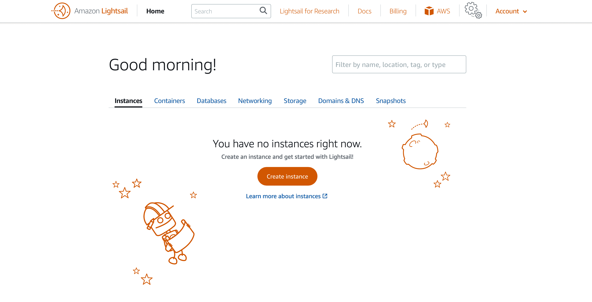Select a server location. Ideally, you'll want to choose a location closest to your target audience. Then select Windows or Linux as your operating system. Since you're not going to perform administrative tasks, it doesn't really matter which one you pick.
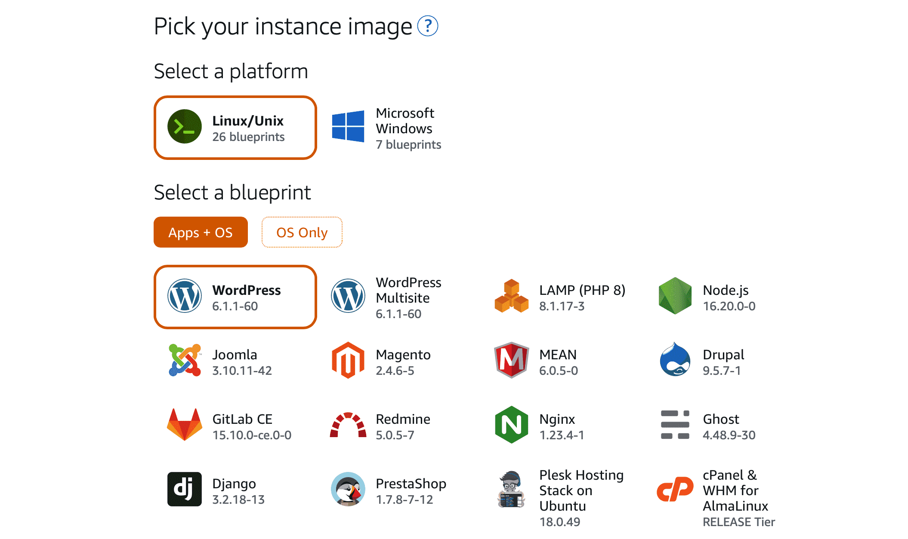Now select a plan. You can get started for just $3.50 per month.
Finally, you'll need to enter a name for your instance and click Create instance.
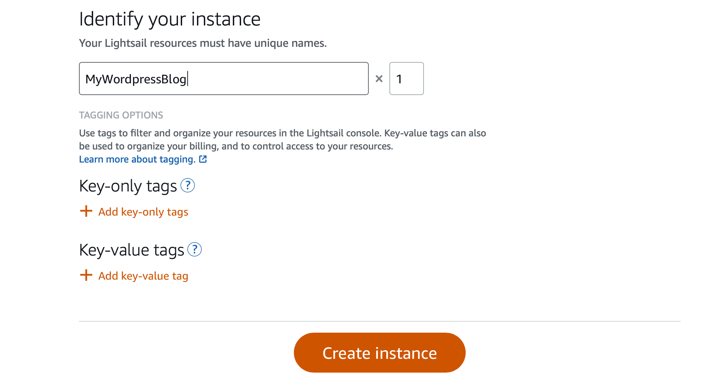Your instance is now created.
Click on the tiny orange box next to the name of your instance.
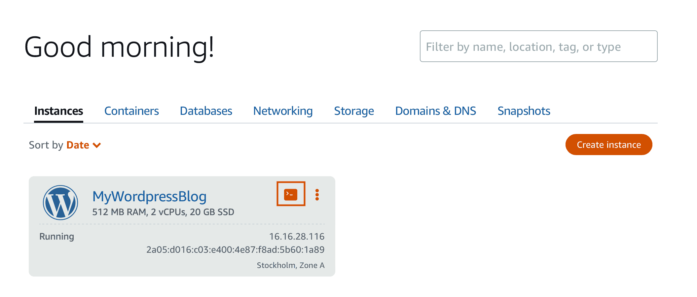After the browser-based SSH client window opens, enter the following command to retrieve the default application password:
cat $HOME/bitnami_application_password
Make note of the password displayed on the screen. You'll use it to sign in to the administrator dashboard of your WordPress website. You can close the terminal now.
We don't have a domain name yet, but we do have a public IP address that you find here:
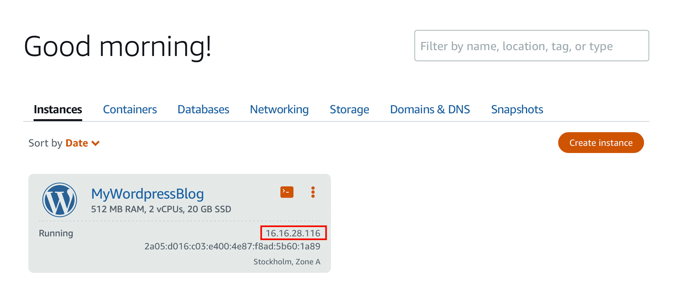In a browser window, now type http://PublicIpAddress/wp-login.php and replace "PublicIpAddress" with your IP address.
It asks for a username and a password. In the Username or Email Address field, type user. Then, enter the password that you copied earlier. Click Log in. You'll then be taken to your WordPress admin dashboard.
You are now signed in to the administrator dashboard of your WordPress website. Well done!
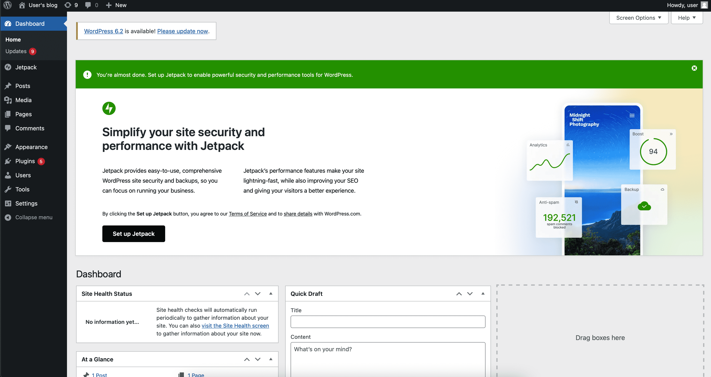Everything that comes next is optional, but recommended.
The default dynamic public IP address attached to your Amazon Lightsail instance changes every time you stop and restart the instance. If you create a static IP address and attach it to your instance, it will keep the public IP address from changing. Later, when you point a registered domain name to your instance, you don't have to update your domain's DNS records every time you stop and restart your instance.
Your Lightsail instances are charged only when they're in the running or stopped state.
Let's try out if the IP address really changes and stop the instance. Click on the three dots on the instance's image and select Stop.
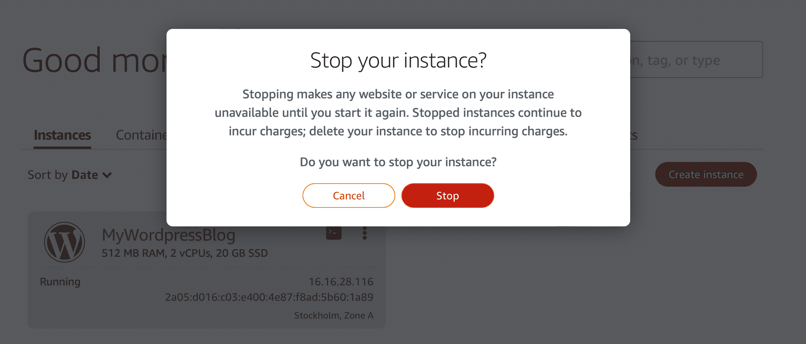Now if you want to refresh your Wordpress page, it won't open. Click on the three dots again and this time select Start. As soon as the status changes to Running, your website is up again, but with a different IP.
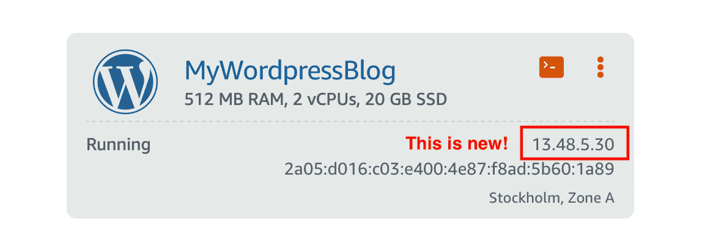Let's create a static IP. You can attach one static IP to a Lightsail instance, and it's already included in the plan you selected at the time of creating the instance.
In the Lightsail console, choose Networking. Choose Create static IP. Select or confirm the location of the IP, attach it to your instance and give it a unique name. Click Create.
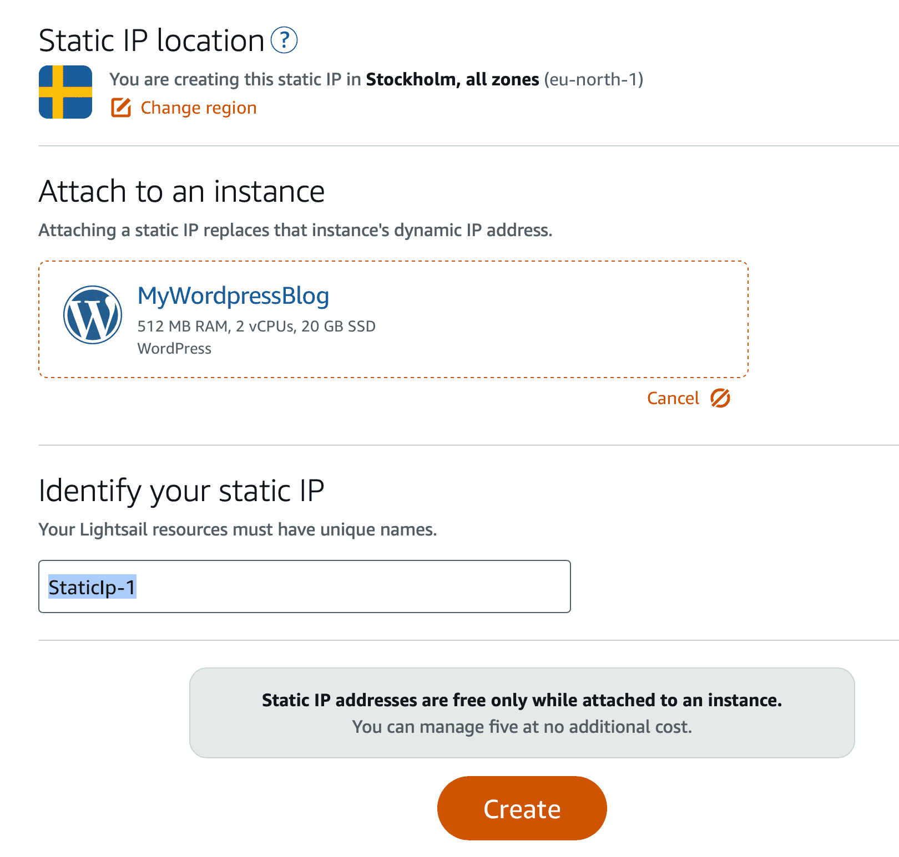On the Networking tab of your instance's management page, you'll see a blue pushpin next to your public IP address. This indicates that the IP address is now static.
I'm going to use Lightsail to register a new domain with Amazon Route 53. Since we're purchasing this domain through Amazon, it automatically creates a DNS zone that has the same name as the domain.
Click Register domain. Specify a domain name and click Check availability. Fill out the domain contact information.
The domain registration takes a while, so go out and grab a cup of coffee.
In Lightsail, go to the Domains tab and select your new domain as the custom domain. Click Assign.
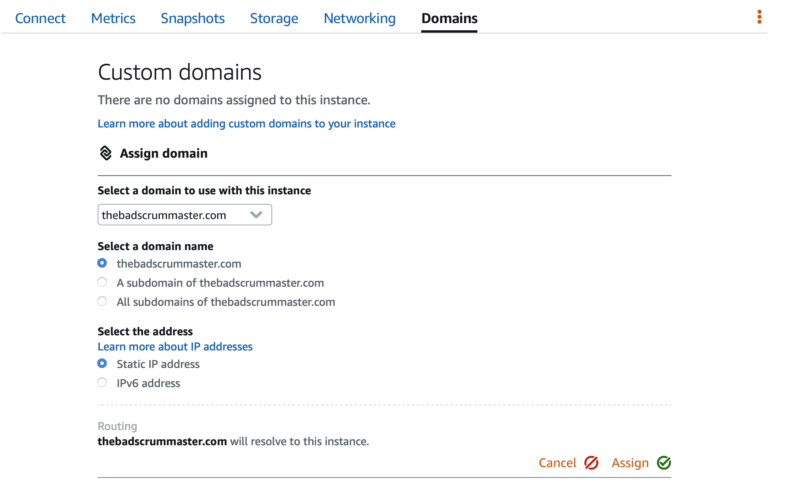If you now open your site by typing the public IP address in the browser, a sample webpage will come up and the browser will say your access is not secure. To make the connection secure, we'll create a certificate.
Before we create a certificate, we need to create a Lightsail distribution. An Amazon Lightsail content delivery network (CDN) distribution caches your website or web application content at worldwide locations. When your user requests content that you're serving through a distribution, the request is routed to the nearest location in terms of latency.
Go to the Networking tab and click Create distribution.
In the Choose your origin section of the page, choose the AWS Region in which your origin resource was created. After that, select the origin. An origin can be an instance, a container or a bucket. In our example we earlier created a Wordpress instance, so let's select it.
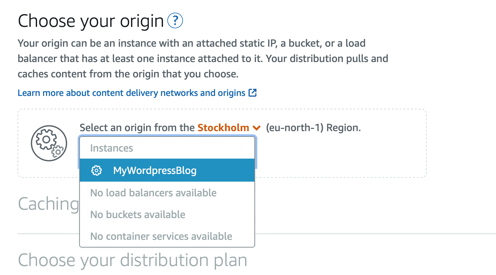For Caching behavior just select the Best for Wordpress option, choose a distribution plan and provide a name for the distribution. Finally, click Create distribution.
Select your distribution and go to Custom domains tab. Click Create certificate. Enter a name for your certificate then specify your domain. I added both thebadscrummaster.com and www.thebadscrummaster.com. Click Create certificate. It will take about 30 seconds for Amazon to add the certificate's validation record to the DNS of the primary domain.
Finally, attach the certificate by selecting it and click Attach.
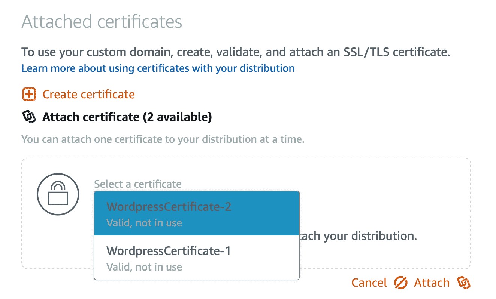We're almost done. We still need to update the DNS records to point our domain on the certificate to our distribution.
Go to your distribution's page. Make note of the default domain. It's something similar to u1be1hut8953ag.cloudfront.net. We must add this value as part of an alias record in the DNS of our domain.
On the Lightsail home page, choose the Domains & DNS tab. Under the DNS zones section, choose your domain name. Choose the DNS records tab. If an A record already exists and it points to an IP instead of the distribution, you need to edit the record. If such a record does not yet exist, choose Add record.
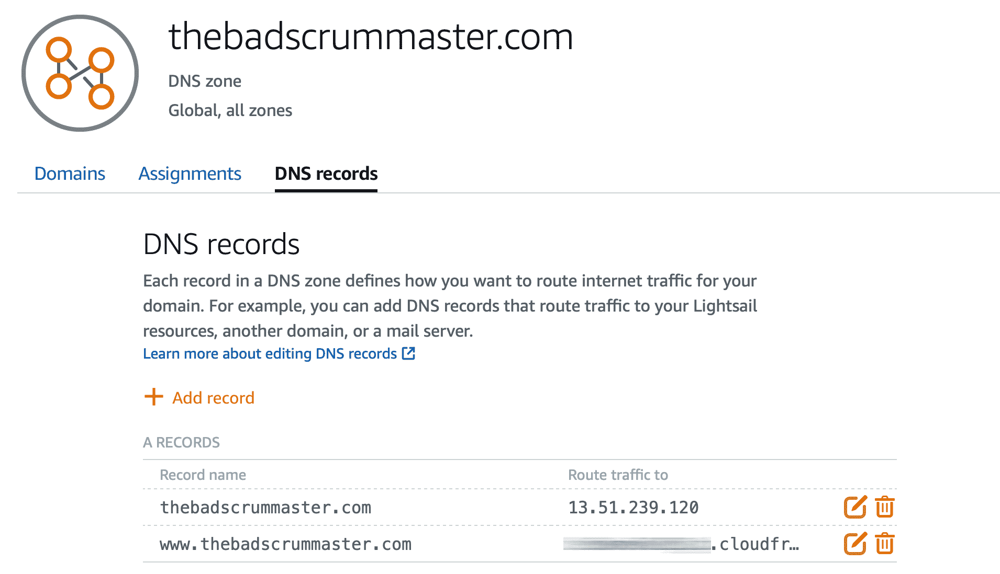Now both the original and the www subdomain routes to the Cloudfront distribution. It will take a while until this gets activated, so don't worry that your browser says your domain is not secure, while the distribution is. It took me about 20 minutes.
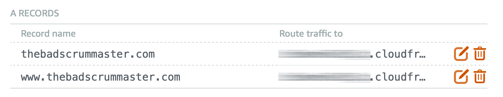I'm not sure if that will happen to you, but now my page is not formatted correctly. Opening the distribution directly shows the same error. This is because we haven't edited the WordPress configuration file to make it work with our distribution.
In the Lightsail console, choose the browser-based SSH client.
After you're connected to your instance, enter the following command to create a backup of the wp-config.php file. If something goes wrong, you can restore the file using the backup.
sudo cp /opt/bitnami/wordpress/wp-config.php /opt/bitnami/wordpress/wp-config.php.backup
Enter the following command to open the wp-config.php file using Vim.
sudo vim /opt/bitnami/wordpress/wp-config.php
Press I to enter insert mode in Vim and delete the following lines from the code:
define('WP_SITEURL', 'http://' . $_SERVER['HTTP_HOST'] . '/');
define('WP_HOME', 'http://' . $_SERVER['HTTP_HOST'] . '/');
Then add these lines of code where you previously deleted the code:
define('WP_SITEURL', 'http://' . $_SERVER['HTTP_HOST'] . '/');
define('WP_HOME', 'http://' . $_SERVER['HTTP_HOST'] . '/');
if (isset($_SERVER['HTTP_CLOUDFRONT_FORWARDED_PROTO'])
&& $_SERVER['HTTP_CLOUDFRONT_FORWARDED_PROTO'] === 'https') {
$_SERVER['HTTPS'] = 'on';
}
Press the Esc key to exit insert mode in Vim, then type :wq! and press Enter to save your edits (write) and quit Vim.
Enter the following command to restart the Apache service on your instance.
sudo /opt/bitnami/ctlscript.sh restart apache
Wait a few moments for your the Apache service to restart, then test that your distribution is caching your content. If something went wrong, re-connect to your instance using the browser-based SSH client. Run the following command to restore the wp-config.php file using the backup you created earlier in this guide.
sudo cp /opt/bitnami/wordpress/wp-config.php.backup /opt/bitnami/wordpress/wp-config.php
Now your website should work fine with either www or without www and it should always redirect http to https. If it does not, just wait 5-10 minutes and make sure you clear the browser cache.
For now you can only log into your Wordpress admin console by using the username user. Since this username is provided by Wordpress by default, you can only change it in your Wordpress console. As a matter of fact, you need to create a new user and delete this one.
To do this, select Users then Add New on the left pane. Provide a name, an email address and make sure you select Administrator as the role. You can use the default password provided, or create a new one.
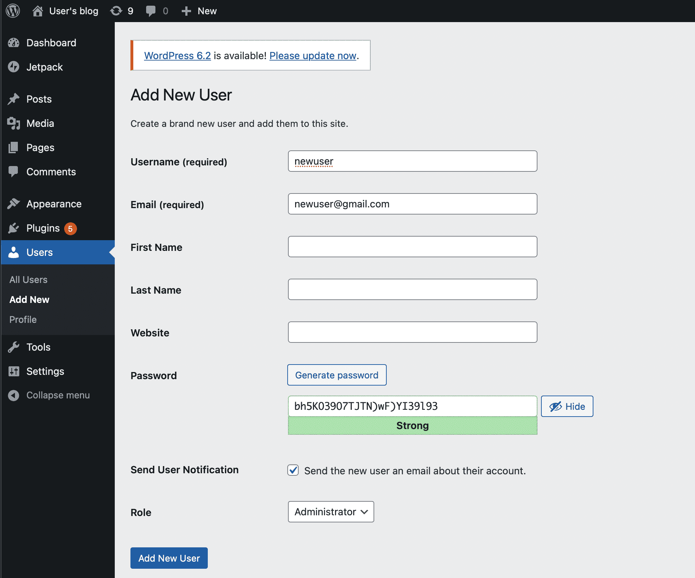Now log out of the account and log in with your new user. Go to Users and delete the default user.
Congratulations! You created a new wordpress site with Amazon Lightsail.
That's the end of this tutorial.